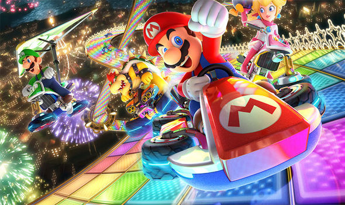
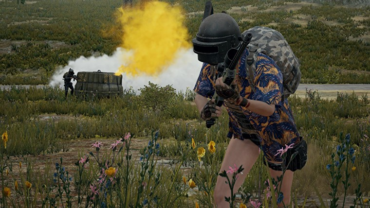

Video games of today and how they are different
Games have changed drastically since they were first developed. Now we have advanced computers designated to play games on the best sepcifications. Games and PC's are being made to be played in an even better resolution of 4k. They have come such a long way from once just being small pixelated animations. Video games are now highly detailed worlds imiginary or realistic. The amount of detail that has changed since the beginning of time is truely incredible.

Mario Kart
The image above is of Mario Kart 8 for the Nintendo Switch. If you watched the video of some gameplay of the original super mario bros. for the nes, then im sure you can notice the difference. As well as notice how far games have come and changed over time. Looking back at the original mario kart on something like the Nintendo 64 there is a massive difference between the two and to see how far they have come is truely amazing.
Player Unknown's BattleGrounds
This image above is of Player Unknown's BattleGrounds. Its a 100 player deathmatch game which has became increasingly popular over the years. It is also the 5th best selling game of all time. The amount of details visable especially when gaming on a PC is incredible. To think they started out as the most simplistic games on earth with the smallest amount of detail and are now what we see today.